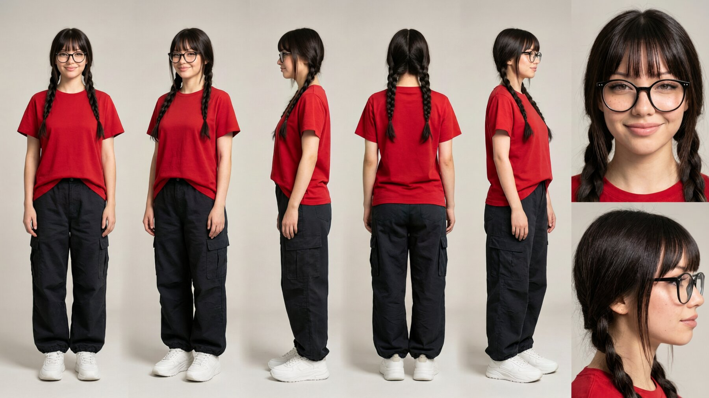
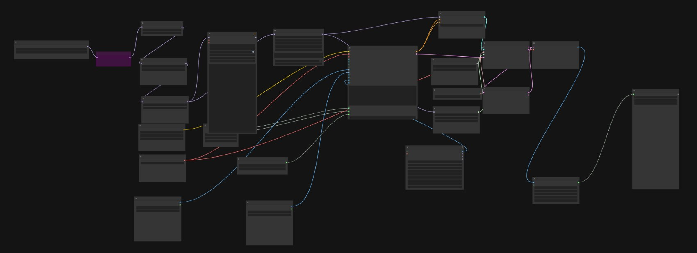
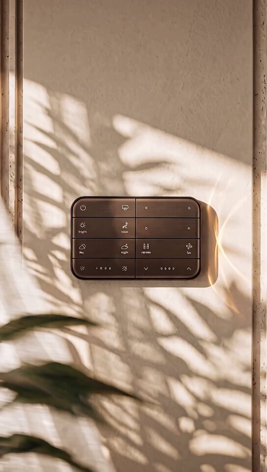

You clicked yes. Twice.
AI is a tool, not the artist.
Things I made with AI: ComfyUI workflows, my own LoRAs, and models pushed until they break.
Everything else on this site is made by hand. This page is the only place the robot helped.
The verdictSo, is it any good?
As you'll see, none of this is good enough for product shots or 3D renders. Even the traditional home isn't quite there: it's not accurate, and it isn't consistent from one scene to the next. It's just not correct. So far, AI is good for ideation or for technical tasks like these. It's not a replacement, but it can make my work, and other artists' work, easier. I'm not for AI, and I'm not against it either. It's just not good enough right now. And if I can learn complicated tools like Unity, Unreal, Blender and Maya, what's there to prompting a chatbot?
01 · Heritage interiorsA South Indian mansion that doesn't exist
A series of rooms in one imagined heritage home: red oxide floors, carved teak, jaali arches, brass lamps and Tanjore-style paintings. I wanted the light to stay the same across every room, so it reads as one house, from golden hour to lamp light.
02 · CharacterOne person, every angle
An original character, designed so she stays the same from shot to shot: a full turnaround sheet with front, three-quarter, side and back, plus close-ups. It's the reference everything after this is built on.

Turnaround sheet03 · VideoPutting her into real footage
Next test: swap the character into an existing webcam clip and keep the original motion, lighting and room. A pose and face-landmark pass drives the movement. I compared MiniMax H3 at 8 steps with a turbo LoRA against the full 20 steps: the fast version is close, but the 20-step pass holds the face, glasses and the can's label much better.

The ComfyUI workflow behind it04 · ProductAn AI pass on a real product
Can a model place a real Keus console in a mood shot without breaking it? The bronze finish and the soft leaf shadows came out well. The icons on the buttons are where it still drifts, which is exactly why the real launch work is rendered in 3D.

AI mood shotThe robot is still cooking.
More AI experiments are on the way. Check back soon, if you dare.
The toolsWhat's under the hood
ComfyUI node workflows, custom LoRA training, img2img and SDEdit passes, and whichever new model came out this week. It all runs locally on my own machine.